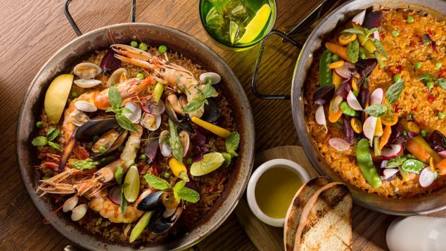

Historial:
Lo mejor de la gastronomia
05/04/19
Con sus valoraciones personales e independientes, el prestigioso gastrónomo Rafael García Santos realiza con gran rigor una selección de los más sobresaliente de nuestra gastronomía: vinos, quesos, jamones ibéricos, restaurantes...El autor cree en la cocina como arte y apuesta por el vanguardismo, potenciando a los jóvenes con talento. Desde sus páginas anima a los cocineros a desarrollar el arte culinario, se convierte en adalid del producto y de los restaurantes de producto y cree que las materias primas son la primera verdad en cocina. Un libro imprescindible para todos los amantes d elos placeres gastronómicos.
PAELLA DE MARISCOS, ESPAÑA
08/04/19
Las olas del mar te acarician los pies, una brisa tibia hace ondear el mantel que cae sobre tus piernas y tienes una paellera humeante ante ti. Camarones, langosta, mejillones y sepias combinadas con arroz blanco y especias, aceite y sal en este platillo valenciano que te pone de inmediato en modo vacacional. Si la estás probando en España, es porque ya estás de vacaciones.